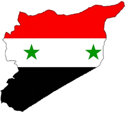

De: La Frikipedia, la enciclopedia extremadamente seria.
De: La Frikipedia, la enciclopedia extremadamente seria. De: La Frikipedia, la enciclopedia extremadamente seria.
| De la serie Países del planeta tierra: | |||||
| República Árabe Siria | |||||
|---|---|---|---|---|---|
| |||||
| Lema: "Los Árabes molan, los judíos no tanto" | |||||
| Himno: حـماةَ الـديارِ عليكمْ سـلامْ
أبَتْ أنْ تـذِلَّ النفـوسُ الكرامْ عـرينُ العروبةِ بيتٌ حَـرام وعرشُ الشّموسِ حِمَىً لا يُضَامْ ربوعُ الشّـآمِ بـروجُ العَـلا تُحاكي السّـماءَ بعـالي السَّـنا فأرضٌ زهتْ بالشّموسِ الوِضَا سَـماءٌ لَعَمـرُكَ أو كالسَّـما رفيـفُ الأماني وخَفـقُ الفؤادْ عـلى عَـلَمٍ ضَمَّ شَـمْلَ البلادْ أما فيهِ منْ كُـلِّ عـينٍ سَـوادْ ومِـن دمِ كـلِّ شَـهيدٍ مِـدادْ؟ نفـوسٌ أبـاةٌ ومـاضٍ مجيـدْ وروحُ الأضاحي رقيبٌ عَـتيدْ فمِـنّا الوليـدُ و مِـنّا الرّشـيدْ فلـمْ لا نَسُـودُ ولِمْ لا نشـيد؟ | |||||
| 
| |||||
| Capital | Damasco | ||||
| Mayor ciudad | Aleppo | ||||
| Lenguas oficiales | Árabe, palestino, kurdo, farsi, turco, y afines. | ||||
| Gobierno | Democracia Liberal (hasta Diciembre de 2010) Dictadura Sangrienta (desde enero de 2011) | ||||
| |
Bashar El-Asado | ||||
| Área | Mas que Israel (por eso quieren destruírlos) | ||||
| Población | Refugiados palestinos, Árabes, kurdos, persas.... pero judíos y comunistas no. | ||||
| Moneda | Libra | ||||
| Zona horaria | Al-Reloj | ||||
| Dominio Internet | .sy | ||||
| Código telefónico | 00Baal
| ||||
| Les gusta Alá & Mahoma y no Jehová & Jebús | |||||
La República Árabe Siria es un país vecino de Jordania, y el Mar Mediterráneo. Es famoso por haber sido un fuerte aliado de Estados Unidos durante mas de 40 años durante los cuales la CIA le vendía armas al gobierno sirio para deshacerse de los comunistas que querían hacer la revolución en el país, con lo cual Siria logró una rápida inserción a la "comunidad internazional" por liquidar comunistas y permitir la empresa privada, ganándose el respeto de USA y de todo el Occidente hasta que por esas casualidades de la vida, de un día para el otro los yankis se acordaron de que el gobierno Sirio no era una democracia multipartidista así que empezaron a mandarle mercenarios para tumbar a su presidente Bashar Al-Assad, al cual lo acusan de ser un asesino que gobierna un "régimen" dictatorial al cual convenientemente nunca lo llamaron "régimen" durante los últimos 40 años porque en ese entonces los necesitaban para exterminar al comunismo.
Siria era un cacho de tierra que durante siglos fue dominada por extranjeros:
Tras la Independencia de Siria vino la familia Al-Assad (El-Asado, según el diccionario Sirio-Argentino) y desde entonces establecieron una linda República Árabe unipartidista con base en los principios del panarabismo del Partido Baaz, que es uno de esos partidos políticos que, al igual que el PSOE, se autoproclaman "socialistas" pero defienden el libre mercado, la empresa privada, la religión, la sociedad de clases, el capital transnacional, y odian profundamente a todos los defensores de la propiedad colectiva, el cooperativismo, el sindicalismo de base, el secularismo, la lucha de clases, el materialismo dialéctico, la abolición de la propiedad privada, y demás principios del verdadero socialismo.
En un principio el entonces presidente Hafez Al-Assad intentó darle forma a su gobierno socialista acercándose al presidente Kim Il-Sung de la Rolex ni sus BMW entonces lo mandó al diablo a Kim Il-Sung (y como sabemos el Diablo se llama Trotsky) así que desde entonces Siria aceptó los dolarucos de USA para fabricar armas de destrucción masiva y erradicar al comunismo en Siria.
A todo ésto le siguió una linda época donde las Guerra Árabe-Israelí, obviamente con el apoyo de los Gamal Abdel Nasser (otro centrista vendido ¬¬), y eventualmente la Guerra Fria acabó y Siria siguió tan capitalista como siempre....
.... Con los comunistas muertos todo parecía ir viento en popa y Siria se mostraba como una próspera nación, donde lo único malo para ellos fue la muerte de su queridísimo generalísimo Hafez Al-Assad, quien fue reemplazado en la presidencia por su propio hijo Bashar Al-Assad en el año 2000, cuando por esas casualidades de la vida todavía Estados Unidos y sus aliados ni se molestaban en referirse al gobierno sirio como el "régimen" ni decían que los Assad eran "dictadores", y a pesar de que la presidencia era un cargo hereditario igual los gringos todavía se referían a Siria como una "república" y los países occidentales y sus medios de prensa no mostraban ni rastro de que Siria fuera un "régimen" donde se cometieran asesinatos...
...Pero el idílico romance llegó a su fin: con los comunistas muertos ahora los OTAN tenían que buscar otro chivo expiatorio para justifcar las Pentágono decidieron que los nuevos malos tenían que ser... ¡adivinaste!: ¡los árabes!. Así el Grupo Bilderberg usó a sus títeres de Al-Qaeda que antaño 11-S para comenzar la guerra contra el terrorismo y erradicar a los árabes de la faz de la tierra para robarles todo el Primavera Árabe" porque se hincharon las pelotas de los monarcas y dictadores Golfo Pérsico y el Magreb, donde esos países son dominados con puño de hierro por regímenes totalitarios ultraconservadores y teocráticos donde las mujeres deben cubrirse de pies a cabeza y no tienen ni voz ni voto, y los hombres tampoco tienen ni voz ni voto porque viven en países dominados por monarquías absolutas sin partidos políticos ciudadanos ni derecho a representación sindical, pero convenientemente la CNN y demás medios hegemónicos alineados a la Oficina Oval no dicen ni una palabra al respecto y esconden la mugre bajo la alfombra para proteger a los monarcas de éstos reinos empetrolados que a cambio mantienen el precio del crudo en favor de las commodities norteameriyankis y permiten que el ejército estadounidense ocupe sus países con todas las bases militares que se les pegue la regalada gana.Así las cosas, hasta entonces el único problema de Siria eran los sionistas que querían expandir su Jewish Reich robándole mas territorio a los árabes, pero con el apoyo de la OTAN a Israel y la nueva patraña de la "guerra preventiva contra el terrorismo" comandada por George W. Bush, Siria tuvo que fortificar sus fronteras y establecer nuevas medidas proteccionistas que obviamente no son de ningún agrado para los usureros de la Unión Europea y los Bancos norteamericanos...
...De ésta manera, el Capital interracial internazional buscaba pagar sus deudas con los petrodólares de la OPEP para evitar que el sistema mercenarios cuya función era disgregar a los pocos musulmanes comunistas que quedaban para posteriormente robarse la "revolución" y derrocar a los mismos gobiernos dictatoriales que occidente apoyó durante décadas, para reemplazarlos por nuevos gobiernos dictatoriales que bajo la máscara de la "democracia" servirán para mantener la hegemonía de la injerencia extranjera en los países árabes y así sofocar el principio de revolución popular que originó la "Primavera Árabe" en pos de evitar un vuelco a la izquierda marxista controlando así el curso de la historia para mantener al Oriente Próximo bajo el yugo de la conspiración judeomasónicacapitalista.
Inmediatamente todos los medios hegemónicos privados, de propietarios diferentes, empresas diferentes, y países diferentes, comenzaron a repetir curiosamente el mismo discurso y a emplear los mismos términos para referirse al gobierno de Al-Assad como "el régimen" y acusarlo de asesinatos no registrados en video donde las únicas fuentes verificables provienen de "una ONG" de la cual no nos dicen ni el nombre, y donde "la oposición" Siria se muestra con camionetas 4X4, artillería antitanque, banderas y uniformes oficiales, y demás equipo y merchandesign demasiado costoso como para que pueda comprarlo un pueblo que se muere de hambre.
La indumentaria, equipamento, y modus operandi de la "oposición" Siria (sospechosamente similar a la que mostraba la "oposición" Libia) presenta no solo los clásicos AK-47 sino también baterías antiaéreas montadas en bonitas 4X4 Ford, con lo que uno se pregunta qué clase de armería le vende artillería de uso militar a unos rebeldes presuntamente civiles (y para colmo en tiempos de guerra ¬¬) y mas aún, de donde saca un pueblo pobre y trabajador suficiente dinero para comprar tantas camionetas 4X4 y armas de guerra de uso exclusivamente militar, lo que nos deja solo dos posibilidades: o le rezaron mucho a Alá para que les haga llover armas desde el cielo, o tanto las armas como los coches y sus banderas estandarizadas fueron regalos de navidad que unos amigos de afuera les enviaron desde el extranjero....
Eventualmente el conflicto llegará a su "fin" con la caída y muerte de Al-Assad cuando los mercenarios financiados por los Khalid Bakdash y su Partido Comunista Sirio, que pese a ser opositor a Al-Assad igual es silenciado totalmente por los medios periodísticos occidentales que por alguna razón ni se molestan en mencionarlo y ni dan el mas mínimo indicio de su existencia.
Como hay tantos pueblos, etnias, sectas y clubes secretos de filosofía, el país es el mejor lugar para los intelectuales que no hacen más que pelearse en los cafés de Damasco debatiendo las teorías de personas que murieron hace miles de años como Sócrates y Platón, pero lamentablemente solo el 0,0001% de los sirios se interesan por las grandes mentes filosóficas como Lao-Tse, Descartes, Marx o Nietzsche, mientras que la gran mayoría de la población le reza a Alá y Baal, incluyendo una minoría mazdeísta, así que en eso son iguales a la sociedad accidental, occidental, donde también solo el 0,0001% de las personas se cuestionan la realidad indagando en los postulados de las grandes cabezas filosóficas de la mas variada índole, mientras que el resto de la población mundial pasa toda su vida tragando sin cuestionar todo lo que le dicen en la tele, los periódicos, la iglesia, y demás dogmas hegemónicos establecidos para opiar al pueblo.
Por otro lado, la gastronomía de Siria se basa en la carne de oveja y zumo de uva fermentada, como los clásicos Shawarmas con carne de cordero envueltos en pan pita y bañados con salsa de menta (vaya delicia...) o el famoso Baklawa, hecho con masa filo, bañado en nuez, almendras, amapolas cultivadas por los talibanes en Afganistán.
Sus fronteras son todas desérticas, pero en vez de volcanes hay grandes pozos que tragan a incautos y también grandes víboras, beduinos, beréberes, kurdos, y soldados judíos camuflados esperando el momento apropiado para sitiar Damasco y anexar todo el territorio Sirio a la jurisdicción del régimen israelita para quedarse con mas recursos naturales y explotar a los trabajadores árabes para usarlos como mano de obra tercerizada, o sea, tal como hicieron con Palestina donde les impiden a los árabes tener su Estado libre y soberano con la excusa de que Yahoo Yahvé les dejó la "tierra prometida" para uso exclusivo de los judíos porque ellos son "el pueblo elegido por Dios" (facherío racista sospechosamente simlar al de los arios) y por eso los árabes deben conformarse con ser parte del Reino de Israel, pero a ellos no les dan derecho a presentarse a elecciones para ocupar cargos políticos en Israel pese a que contradictoriamente los israelitas se la pasan diciendo que Palestina forma parte del territorio israelí, ¿entonces por que a los palestinos no les dan los mismos derechos que a los judíos?, y el mismo libreto zionista se lo quieren aplicar a Siria para cambiar todo el mapa geopolítico de la región (así que la poca geografía que tiene Siria ya mas bien tiene los días contados si llega a caer en manos del Nazionismo.
Entre sus camellos, dromedarios, y algunas otras especies de camélidos de una jiba, dos jibas, o tres jibas, pero no hay jibias en Siria porque el poco mar que tienen está ocupado por las corbetas y fragatas del Estado Israelí, así que los pesca a los sirios porque como sabemos ni los musulmanes ni los judíos pueden comer cerdo, así que por mas que sobre la carne de puerco ellos se matan por un par de espinas de pescado.
Entre sus plantas se dan grandes variedades de granadas: granadas de mano, anticarros, antichoque, de racimo, con Uranio enrriquecido y/o empobrecido... o sea, lo mismo que tienen los judíos y los yankis, pero por esas casualidades de la vida si los árabes tienen armas para defender su propio país son llamados "terroristas" pero si los judíos y los yankis tienen las mismas armas (y más) para invadir otros países son llamados "libertadores" (hasta donde sabemos Bolívar y San Martín no andaban a los bombazos por el Medio-Oriente ¬¬).
NOTA: También tienen Plantas Nucleares, aunque no muchas, pero con que tengan una sola ya basta para que digan que son una "amenaza para la seguridad nazional", mientras que entre los yonkis y los europeos tienen mas de 994394993 plantas nucleares pero nadie dice que sean ninguna amenaza (pese a los dos bombazos radioactivos sobre Hiroshima & Nagasaki U_U).
| |
|---|
| Arabia Saudita • Azerbaiyán • Bahrein • Bangladesh • Bután • Birmania • Brunéi • Camboya • Emiratos Árabes • Indonesia • Jordania • Kuwait • Kirguistán • Maldivas • Nepal • Omán • Qatar • Singapur • Siria • Sri Lanka • Tayikistán • Timor Oriental • Yemen |
Autor(es):